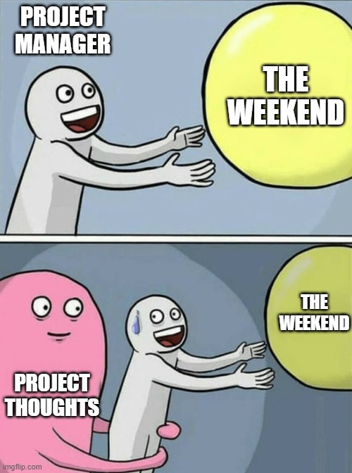
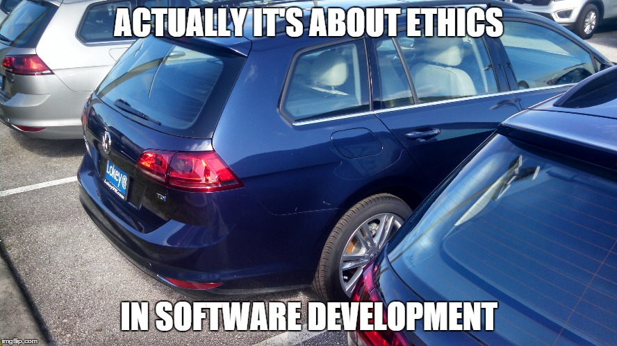

Farewell Meteor, Hello software engineering
11 Dec 2023What is software engineering? It’s a term I’ve been hearing since my first day in computer science. Is it just coding? Is it solely about creating software? With these questions in mind, I enrolled in ICS 314 in April. Looking back at my decision now, I’ve learned a lot from this class, but there are also aspects I don’t particularly like about it.
Let’s discuss the aspects I don’t like first. I believe software engineering should be like a canvas where we can freely and creatively create anything we want. Therefore, one thing I don’t like is being limited to using only a particular technology stack. However, I really enjoy this class because it reveals mysteries I’ve had for a long time.
Open Source Software Development
“software is like food : it’s better when it’s free.”― Linus Torvalds
If you’re a computer science student, you’ve likely heard of an operating system called Linux. It’s considered one of the best operating systems globally. Unlike Windows, it’s free and open-source, meaning anyone can download and modify the software as they please, and it doesn’t cost a cent! The creator, Linus Torvalds, decided to make it open-source and free because that’s how software should be – benefiting everyone. However, certain ethical issues might prevent some software from being open source. Generally, I believe open source is a crucial characteristic of software engineering. Thanks to this attribute, we can continuously combine intelligence from everyone who contributes to the field of computer science.
Imagine if all software were not open source; how hard would it be to simply create a website? How much money would you need to pay for the resources to build software? Thanks to the open-source attribute, I can add cool features like a QR code feature in my final projects. I can store my data in a database without actually owning one, all thanks to the open-source attribute. I hope all software engineers can continue maintaining the attitude of open sources so we can all improve together.

Agile Project Management
Project management might be the most critical distinction between software engineering and programming. Programming is usually an individual activity, whereas software engineering involves group work. So, if I prefer working in the morning while my group mates prefer evenings, how can we effectively communicate? This is where agile project management or issue-driven project management comes into play.
I acknowledge that project management is truly beneficial for managing a project, but I believe we should have more freedom in it, including the structure of the projects or even the matter of branch naming. For instance, instead of naming it ‘issue-xx,’ we can use more intuitive names like ‘SetupDataBase’ or ‘Fix-SearchPage.’ In the future, I anticipate experiencing various project management strategies with different structures or standards. However, the core idea remains the same: using this as a communication tool to overcome factors such as time zones or language barriers. Despite these difficulties, all members in the group can still effectively communicate and ensure that the project is on the right track.

Ethics in Software Engineering
Lastly, I’d like to discuss ethics in software engineering. Reflecting on Linus Torvalds’ famous quote, ‘In the world of Linux, everyone can be a god,’ we see the immense power inherent in software engineering. What does this mean? Consider ChatGPT, one of the most powerful software creations of 2022. You can ask it anything, and it will provide a decent answer. While not everyone, it’s easy to envision potential problems with it. For instance, I could ask it about harmful actions, and if the model isn’t properly trained, it could potentially teach me how to do them.
What I’m trying to illustrate here is that a computer is essentially dumb; it lacks the ability to distinguish what it should or should not do and only follows human commands. Therefore, if a human gives it a destructive command, it will execute it. Hence, the responsibility to prevent such commands falls on the software engineer. We need to ensure that the system has the capability to discern between actions it can or cannot perform.
While there are instances where we can’t limit our software, we should still provide warnings to users about potential risks. A prime example is commercial applications. If the product being promoted through our application is hazardous, the software should alert users about the potential risks associated with that product before they consider purchasing it.

Conclusion
I can’t stress this enough: software engineering isn’t solely about coding. It’s a psychological subject that demands consideration not only of human interaction during software production but also the purpose behind that software. Surprisingly, this is the most vital lesson I’ve learned from this class, and it’s a value I’ll carry with me into any software engineering career I pursue in the future.